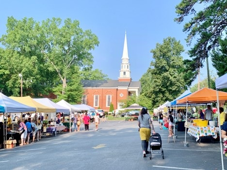

Community Spotlight: Greensboro Farmers Curb Market
The Greensboro Farmers Curb Market is a community market where local
farmers, food producers, artisans, and other vendors sell their products.
Visitors can find fresh produce, baked goods, prepared foods, flowers,
handmade items, and other locally produced goods. The market gives
Greensboro residents and visitors a place to shop locally while
connecting with members of the community.

Featured Activities
- Shop for fresh fruits and vegetables from local farmers.
- Browse baked goods and prepared foods from local food vendors.
- Explore handmade products from local artists and artisans.
- Meet farmers, producers, makers, and other local vendors.
- Discover seasonal products and special market offerings.
Attendee Tips
- Arrive early for the best selection of fresh produce.
- Bring reusable bags to carry your purchases.
- Check the market schedule and weekly offerings before visiting.
- Plan your transportation and parking before arriving.
Attendee Testimonial
I enjoyed visiting the farmers market in Greensboro, and seeing the local vendors.
The local products made the visit so much more enjoyable
Return to the Community Guide Home Page